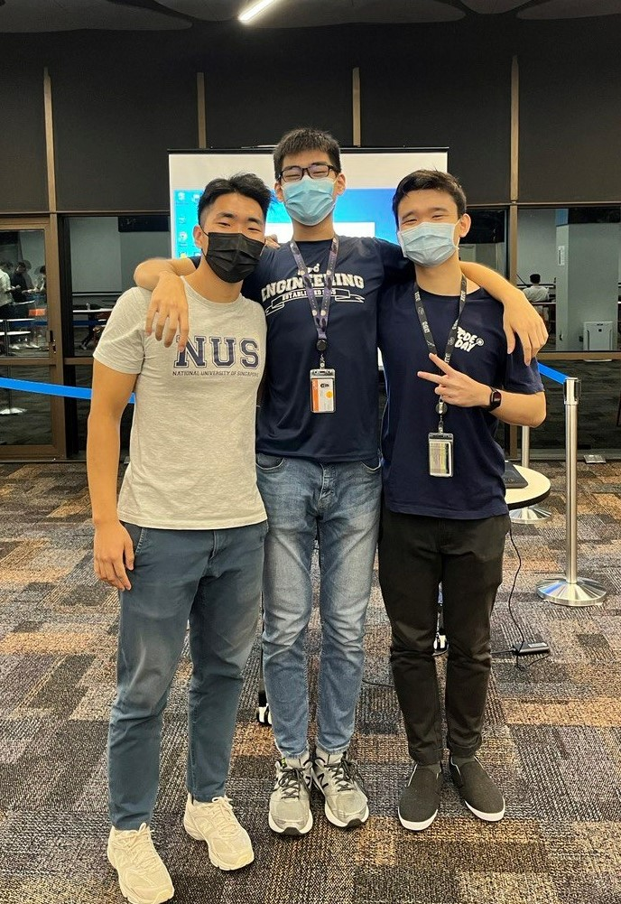
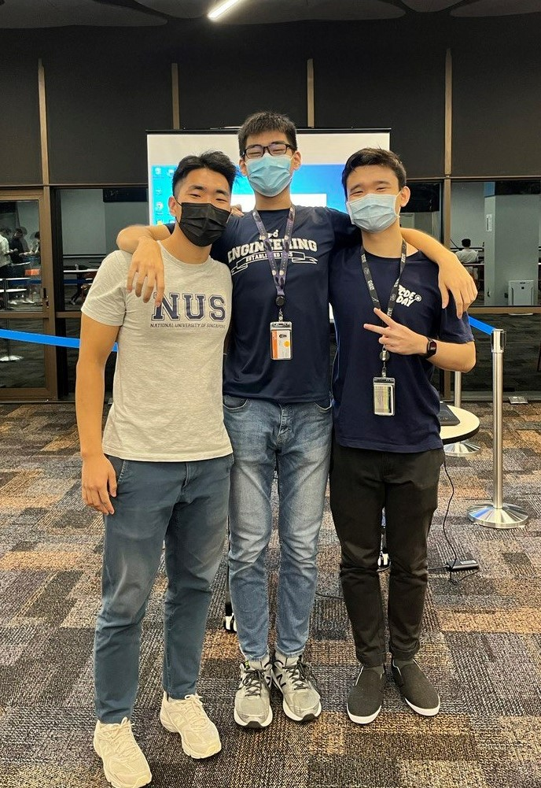
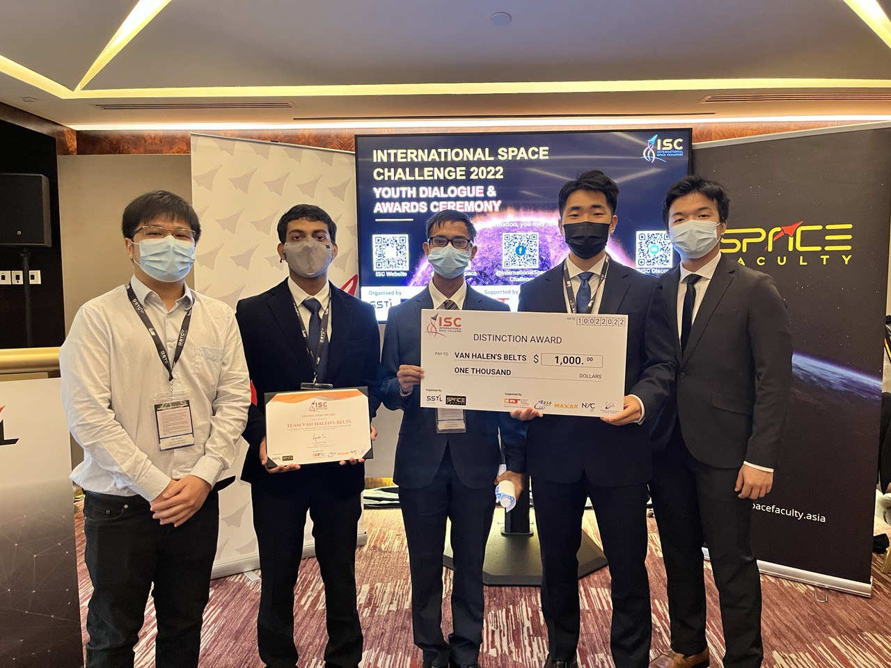

Hi! I'm Owen, a Mechanical Engineer from the National University of Singapore.
Education
-
Bachelor of Mechanical Engineering (Hons.) and 2nd Major in Innovation & Design Programme, Aug 2021 - May 2024 (Expected)
Pursuing Robotics Specialization under Mechanical Engineering Major
-
Awarded flagship NUS Engineering Scholarship given to top 1% of freshmen, which includes a full scholarship
of an accelerated 3-year Bachelor’s of Engineering & 1-year Master’s Programme
National University Of Singapore
Engineering Scholars Programme
Work
- UAV Mechanical Engineering Intern
-
Performance Rotors (PR) develops drones and robotics solutions for data-acquisition in GPS-denied and confined space
environments without risk to human lives.
I worked on designing and developing mechanical solutions to many complex problems, and I had a great time! Here are some of the highlights:
• Independent Product lead and mechanical design of drone powder payload release and mounting mechanism on a custom drone built for client company
• Innovation and development of 3D Printed ultrasonic generator housing and ultrasonic testing probe spring suspension system for Non-Destructive Testing (NDT) Operations
• Minimized manufacturing and assembly times of core products by 35% through redesigning mechanical mounts using DFM principles


Above are some cool photos of my projects at PR. Please refer to my portfolio pdf for my best engineering work!
- Platoon Sergeant
-
The Naval Diving Unit (NDU) is the special forces formation of the Singapore's Navy. I spent two years there
on national service and it was life-changing!
I spent the time honing life skills in many areas, such as logistical planning, clear communication and effective leadership. Here are some of the highlights:
• Presented the Best National Serviceman (Full-Time) Award for my tenure in the unit
• Led and oversaw combat diving operations for 50+ Divers as the sole Platoon Sergeant of the 51st Batch of Combat Divers under the Underwater Demolitions Group
• Pioneered safety checks and procedures for explosive ordnance assembly, which were implemented for future training of combat divers
-
When I first entered college, I was introduced to a senior who had snuck a 3D printer into his dormitory room.
We hit it off and he taught me lots about
3D Printing, and before long, I was dreaming up ideas about what I could make. Of course, i chose to make a cool robot hand!


The robot fingers move with the help of four (really strong!) servo motors, all controlled with an Arduino Uno. The joints are made of flexible TPU while the shell is made of PLA.
After assembling the hand and testing the movement with basic arduino code, I decided to upgrade the robot hand with computer vision capabilities, and make it replicate my hand gestures! This was done with OpenCV and CVZone.
NUS N-Novate Circular Economy Challenge - 1st Place
-
As part of this competition with a circular economy theme, our team engineered a solution to turn used face
masks into vacuum cleaner filters!
We first developed the design, mechanical fastening, and manufacturing process of our product. (Yes, it works!) I also took on the role of the business development lead, and planned out the revenue model, business partnerships and social media campaigns.
I also successfully pitched our business case to a panel of industry experts, competition judges and a live audience, and we managed to clinch the first place for this competition! We were featured on Channel News Asia (CNA) as well.
 

It was a great experience complementing an engineering mind with a business acuity, especially when planning out how to successfully scale a low-profit margin business, and how to overcome any negative impressions on the consumer end.
James Dyson Award Competition
-
This was an engineering design competition, where we were tasked to design a solution that solved any problem.
The idea came about when I saw the huge amount of plastic waste from takeout that would be dumped into the garbage bins outside my workplace. We decided to make reusable lunchboxes more convenient for people to use, to encourage consumers to choose the slightly more inconvenient, but much more environmentally friendly option.
My team innovated and designed a folding lunchbox concept, and I lead my team of 5 engineers through the full design and prototyping process, including CAD design, 3D Printing, mechanical fastening and assembly. I also directed market research on existing products and user needs to identify & improve business viability.


We went through multiple rounds of prototypes, and it was a great learning experience working with rigid and flexible components to create a folding system!
International Space Challenge 2022 - 2nd Place
-
For this competition, we were tasked to design a satellite that would traverse the Van Allen's Belt region. We were also tasked to design an experimental payload that
the satellite would bring up.
We designed a novel High-Voltage Energy Generator (HEG) which would harness energy from the electrons in the Van Allen's Belt region and store it in a battery. The experimental payload was designed based off of a paper by Kolesnikov and Yakovlev in January 2008.
My team and I worked on every aspect of the satellite design, from 3D CAD of the satellite structure, sourcing of components for telemetry, communication, electrical subsystems and many more. We also covered financial planning for the entire satellite mission and conducted a feasibility report.

NUS Orbital 2022 - Collate
-
Orbital is an independent software development project under NUS' School of Computing. For this project, my partner and I ideated and created Collate, a social media
communications application that organizes users’ private messages and notifications across their various social media applications into one centralized platform.
I designed and implemented a feature to prioritize negative messages, such as product complaints, by conducting sentiment analysis on incoming private messages from Telegram and Gmail for small business owners. It would filter out any messages with negative sentiment, for the business owners to tend to first!
For one of the earlier prototypes, I developed a Python application using Flask Framework, while using Postman for testing and Heroku for deployment. The NLP was done with NLTK's Vader Toolkit and SKLearn.
-
Software
Languages:
Python, Arduino C++, C#, Matlab, VBA, HTML, CSS
Python Libraries:
Numpy, Matplotlib, cv2, CVZone, MediaPipe, NLTK, Scikit-Learn, Flask
Other Competencies:
Git, Linux
Robotics / Electronics
Arduino, Raspberry Pi, ROS, Drone Flight Controller Pixhawk
Hardware
Computer-Aided Design:
Solidworks, AutoCAD Fusion360
3D Printing:
Prusa Slider, Markforged Eiger
General:
Soldering, Vacuum Forming, Wood-working, General Workshop Power Tools (Dremel, Hand Drill), Bill of Materials
Others
Languages:
English, Korean, Mandarin Chinese
Graphic Design:
Photoshop, Blender
Microsoft Office Suite
Performance Rotors
Naval Diving Unit, Republic of Singapore Navy
Projects & Competitions
-
3D-Printed Hand Gesture Tracking Robot Hand
Skills
Contact Information
I would be very happy to hear from you! Thank you for spending your time looking around my website.
Owen Li Dong Lin
Email: owenli@u.nus.edu
Handphone Number: +65 84845160
www.linkedin.com/in/owenliwork